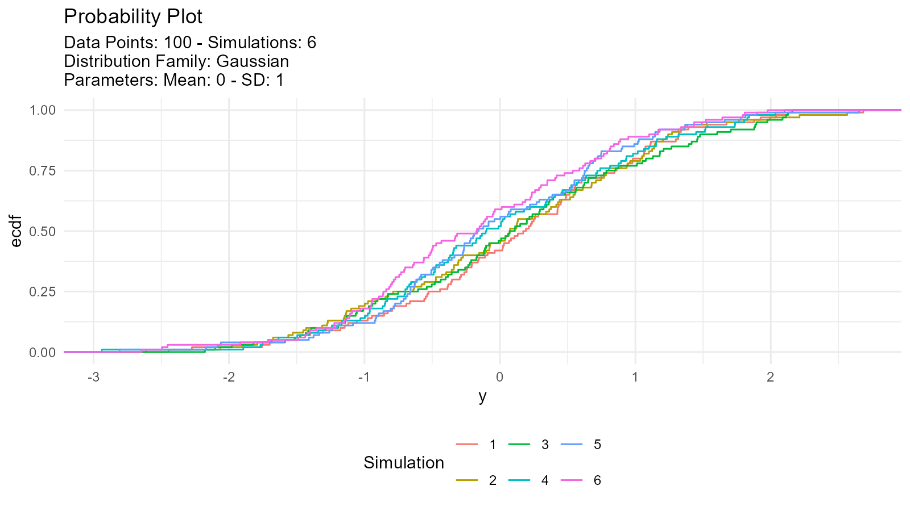
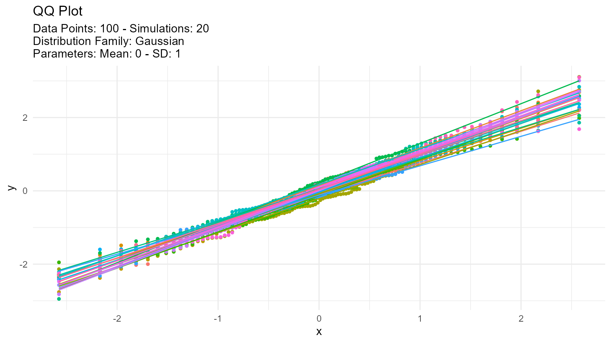

Example
This is a basic example which shows you how easy it is to generate data with TidyDensity:
library(TidyDensity)
library(dplyr)
library(ggplot2)
tidy_normal()
#> # A tibble: 50 × 7
#> sim_number x y dx dy p q
#> <fct> <int> <dbl> <dbl> <dbl> <dbl> <dbl>
#> 1 1 1 1.60 -3.66 0.000227 0.5 1.58
#> 2 1 2 0.985 -3.52 0.000602 0.508 0.841
#> 3 1 3 0.644 -3.39 0.00142 0.516 0.586
#> 4 1 4 1.20 -3.25 0.00298 0.524 1.03
#> 5 1 5 -0.0886 -3.11 0.00555 0.533 0.129
#> 6 1 6 -0.0347 -2.98 0.00926 0.541 0.161
#> 7 1 7 1.28 -2.84 0.0139 0.549 1.11
#> 8 1 8 1.14 -2.70 0.0191 0.557 0.980
#> 9 1 9 0.0559 -2.57 0.0246 0.565 0.214
#> 10 1 10 -2.47 -2.43 0.0309 0.573 -Inf
#> # … with 40 more rows
#> # ℹ Use `print(n = ...)` to see more rowsAn example plot of the tidy_normal data.
tn <- tidy_normal(.n = 100, .num_sims = 6)
tidy_autoplot(tn, .plot_type = "density")
tidy_autoplot(tn, .plot_type = "quantile")
tidy_autoplot(tn, .plot_type = "probability")
tidy_autoplot(tn, .plot_type = "qq")
We can also take a look at the plots when the number of simulations is greater than nine. This will automatically turn off the legend as it will become too noisy.
tn <- tidy_normal(.n = 100, .num_sims = 20)
tidy_autoplot(tn, .plot_type = "density")
tidy_autoplot(tn, .plot_type = "quantile")
tidy_autoplot(tn, .plot_type = "probability")
tidy_autoplot(tn, .plot_type = "qq")